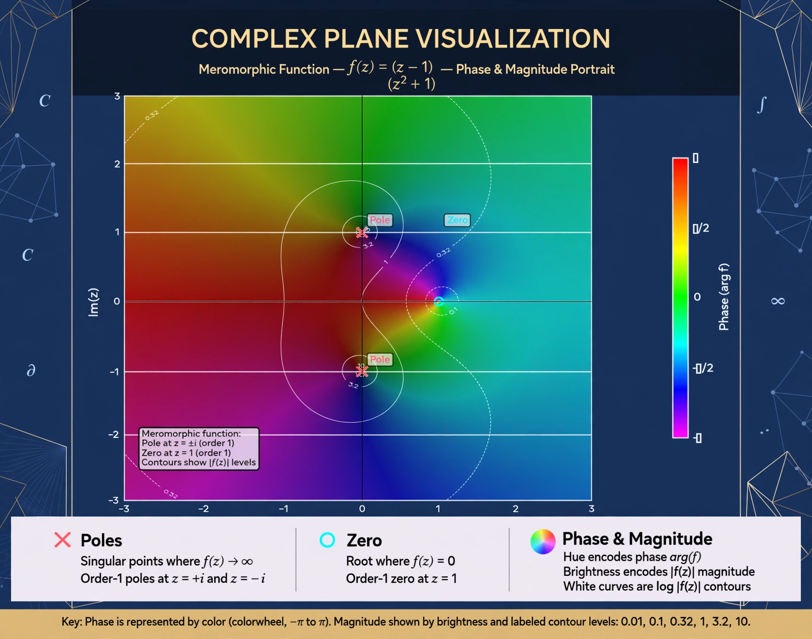

In complex analysis, a meromorphic function on an open subset of the complex plane is a function holomorphic on all of the subset except for a set of isolated points, which are poles of the function.

Every meromorphic function can be expressed as the ratio of two holomorphic functions. Rational functions, the gamma function, Riemann zeta function, and elliptic functions are meromorphic on the whole plane or Riemann sphere.
On a Riemann surface, a meromorphic function is a holomorphic map to the Riemann sphere that is not identically infinity. On compact Riemann surfaces, non-constant meromorphic functions are rational-like and separate points in many cases.